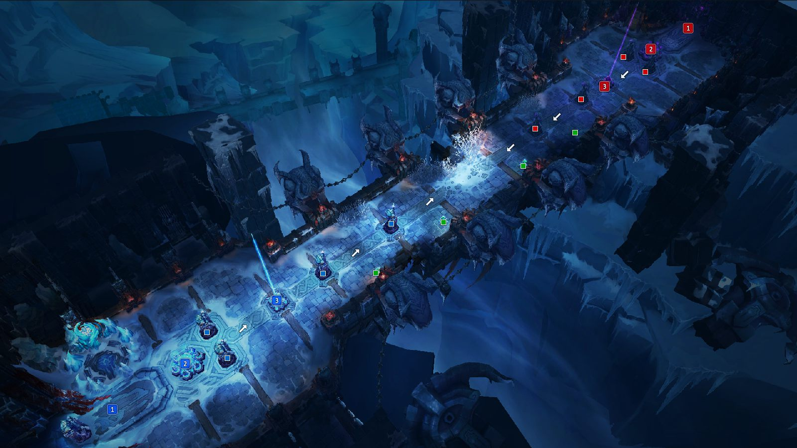
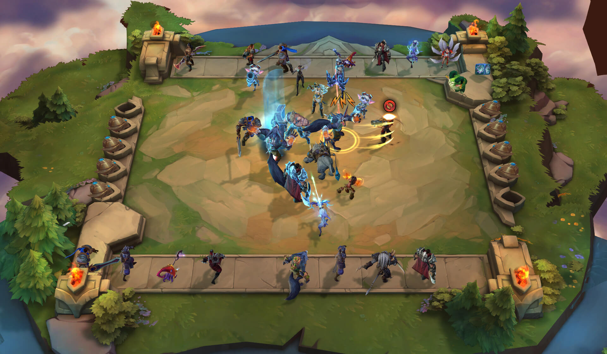

Mapas Disponiveis
Aqui estão os mapas que eu mais gosto em League of Legends e o que os torna especiais para mim.

Summoner's Rift
O clássico mapa 5v5. Gosto da dinâmica estratégica e dos objetivos como o Barão e os Dragões.

Howling Abyss (ARAM)
Um mapa de batalha única onde tudo é decidido em uma rota. Perfeito para partidas rápidas e caóticas.

Teamfight Tactics
É um modo de jogo da plataforma, mas não jogo.